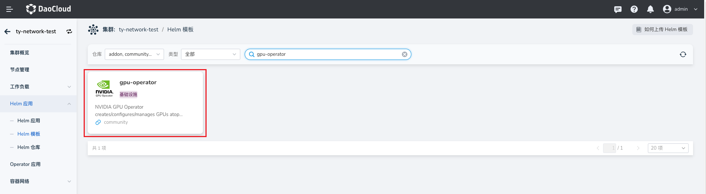

在 AI 集群基于 Spiderpool 搭配 Macvlan 技术给容器提供 RDMA 通信能力¶
本页介绍在建设 AI 集群场景下，如何基于 Spiderpool + Macvlan 技术给容器提供 RDMA 通信能力，适用在 RoCE 网络场景下。
基于 RDMA shared device plugin, 给容器插入 Macvlan 接口，能够把 master 接口的 RDMA 设备共享给容器使用，因此：
RDMA system 需要工作在 shared 模式下，所有的容器共享使用宿主机上的 master 网卡的 RDMA 设备。它的特点是，每个新启动的容器中，其 RDMA 设备的可用 GID index 总是在递增变换的，不是固定值。
在 Infiniband 的 IPOIB 网卡上不支持创建 Macvlan 接口，因此，本方案只能适用在 RoCE 网络场景下，不能使用在 infiniband 网络场景下。
方案¶
本文将以如下典型的 AI 集群拓扑为例，介绍如何搭建 Spiderpool 给 AI 集群提供 RDMA 通信能力。

集群的网络规划如下：
在节点的 eth0 网卡上运行 calico CNI，来承载 kubernetes 流量。AI workload 将会被分配一个 calico 的缺省网卡，进行控制面通信。
节点上使用具备 RDMA 功能的 Mellanox ConnectX5 网卡来承载 AI 计算的 RDMA 流量，网卡接入到 rail optimized 网络中。AI workload 将会被额外分配所有 RDMA 网卡的 Macvlan 虚拟化接口，确保 GPU 的高速网络通信。
安装要求¶
- 参考 Spiderpool安装要求
- 主机上准备好 Helm 二进制
- 安装好 Kubernetes 集群，kubelet 工作在图 1 中的主机 eth0 网卡上
-
安装 Calico 作为集群的缺省 CNI，使用主机的 eth0 网卡作为 calico 的流量转发网卡。 如果未安装，可参考官方文档 或参考以下命令安装:
$ kubectl apply -f https://github.com/projectcalico/calico/blob/master/manifests/calico.yaml $ kubectl wait --for=condition=ready -l k8s-app=calico-node pod -n kube-system # set calico to work on host eth0 $ kubectl set env daemonset -n kube-system calico-node IP_AUTODETECTION_METHOD=kubernetes-internal-ip # set calico to work on host eth0 $ kubectl set env daemonset -n kube-system calico-node IP6_AUTODETECTION_METHOD=kubernetes-internal-ip
主机准备¶
-
安装 RDMA 网卡驱动
对于 Mellanox 网卡，可下载 NVIDIA OFED 官方驱动 进行主机安装，执行如下安装命令
# mount /root/MLNX_OFED_LINUX-24.01-0.3.3.1-ubuntu22.04-x86_64.iso /mnt # /mnt/mlnxofedinstall --all对于 Mellanox 网卡，也可基于容器化安装驱动，实现对集群主机上所有 Mellanox 网卡批量安装驱动，注意的是，该运行过程中需要访问因特网获取一些安装包。当所有的 ofed pod 进入 ready 状态，表示主机上已经完成了 OFED driver 安装，参考步骤如下：
-
进入 Helm 应用 -> Helm 模板 ，找到并点击 ofed-driver

-
在 版本选择 中选择希望安装的版本，点击 安装 。
-
在安装界面，填写所需的安装参数后，点击 确定 。

-
-
确认网卡支持 Ethernet 工作模式
本示例环境中，宿主机上接入了 mellanox ConnectX 5 VPI 网卡，查询 RDMA 设备，确认网卡驱动安装完成
$ rdma link link mlx5_0/1 state ACTIVE physical_state LINK_UP netdev ens6f0np0 link mlx5_1/1 state ACTIVE physical_state LINK_UP netdev ens6f1np1 .......确认网卡的工作模式，如下输出表示网卡工作在 Ethernet 模式下，可实现 RoCE 通信
如下输出表示网卡工作在 Infiniband 模式下，可实现 Infiniband 通信
如果网卡没有工作在预期的模式下，请输入如下命令，确认网卡支持配置 LINK_TYPE 参数，如果没有该参数，请更换支持的网卡型号
$ mst start # check the card's PCIE $ lspci -nn | grep Mellanox 86:00.0 Infiniband controller [0207]: Mellanox Technologies MT27800 Family [ConnectX-5] [15b3:1017] 86:00.1 Infiniband controller [0207]: Mellanox Technologies MT27800 Family [ConnectX-5] [15b3:1017] ....... # check whether the network card supports parameters LINK_TYPE $ mlxconfig -d 86:00.0 q | grep LINK_TYPE LINK_TYPE_P1 IB(1) -
开启 GPUDirect RMDA 功能
-
进入 Helm 应用 -> Helm 模板 ，找到并点击 gpu-operator

-
在 版本选择 中选择希望安装的版本后，点击 安装 。
-
在安装界面，通过 参数配置 选择 YAML 开启 driver.rdma.enabled、driver.rdma.useHostMofed 参数，让 gpu-operator 去安装 nvidia-peermem 内核模块，启用 GPUDirect RMDA 功能，加速 GPU 和 RDMA 网卡之间的转发性能，其他用默认值，点击 确定 ，完成安装。
可在主机上输入如下命令，确认安装成功的内核模块填写所需的安装参数，例如：
-
-
确认主机上的 RDMA 子系统为 shared 模式，这是 macvlan 场景下提供 RDMA 设备给容器的要求。
安装 Spiderpool¶
-
安装 Spiderpool 请参考 Spiderpool 安装文档，注意，在安装时，必须开启 RdmaSharedDevicePlugin 功能，示例如下：
完成后，安装的组件如下:
$ kubectl get pod -n spiderpool spiderpool-agent-9sllh 1/1 Running 0 1m spiderpool-agent-h92bv 1/1 Running 0 1m spiderpool-controller-7df784cdb7-bsfwv 1/1 Running 0 1m spiderpool-init 0/1 Completed 0 1m spiderpool-rdma-shared-device-plugin-9xsm9 1/1 Running 0 1m spiderpool-rdma-shared-device-plugin-nxvlx 1/1 Running 0 1m -
配置 k8s-rdma-shared-dev-plugin, 识别出每个主机上的 RDMA 共享设备资源
修改如下 configmap，创建出 8 种 RDMA 共享设备，它们分别亲和每一个 GPU 设备。configmap 的详细配置可参考官方文档
$ kubectl edit configmap -n spiderpool spiderpool-rdma-shared-device-plugi .... config.json: | { "periodicUpdateInterval": 300, "configList": [ { "resourcePrefix": "spidernet.io", "resourceName": "shared_cx5_gpu1", "rdmaHcaMax": 100, "selectors": { "ifNames": ["enp11s0f0np0"] } }, .... { "resourcePrefix": "spidernet.io", "resourceName": "shared_cx5_gpu8", "rdmaHcaMax": 100, "selectors": { "ifNames": ["enp18s0f0np0"] } } ]完成如上配置后，可查看 node 的可用资源，确认每个节点都正确识别并上报了 8 种 RDMA 设备资源
$ kubectl get no -o json | jq -r '[.items[] | {name:.metadata.name, allocable:.status.allocatable}]' [ { "name": "ai-10-1-16-1", "allocable": { "cpu": "40", "pods": "110", "spidernet.io/shared_cx5_gpu1": "100", "spidernet.io/shared_cx5_gpu2": "100", ... "spidernet.io/shared_cx5_gpu8": "100", ... } }, ... ] -
创建 CNI 配置和对应的 ippool 资源
对于 Ethernet 网络，请创建的 GPU 亲和的 macvlan 网卡配置，参考创建 multusCR，并创建对应的 IP 地址池，参考创建 IP 池。如下例子，是配置了 GPU1 亲和的网卡和 IP 地址池。
$ cat <<EOF | kubectl apply -f - apiVersion: spiderpool.spidernet.io/v2beta1 kind: SpiderIPPool metadata: name: gpu1-net11 spec: gateway: 172.16.11.254 subnet: 172.16.11.0/16 ips: - 172.16.11.1-172.16.11.200 --- apiVersion: spiderpool.spidernet.io/v2beta1 kind: SpiderMultusConfig metadata: name: gpu1-macvlan namespace: spiderpool spec: cniType: macvlan macvlan: master: ["enp11s0f0np0"] ippools: ipv4: ["gpu1-net11"] EOF
创建测试应用¶
-
在指定节点上创建一组 DaemonSet 应用 如下例子，通过
annotations v1.multus-cni.io/default-network指定使用 calico 的缺省网卡，用于进行控制面通信，annotations k8s.v1.cni.cncf.io/networks接入 8 个 GPU 亲和网卡的网卡，用于 RDMA 通信，并配置 8 种 RDMA resources 资源。-
进入 Helm 应用 -> Helm 模板 ，找到并点击 rdma-tools
-
在安装界面，通过 参数配置 选择 YAML ，更新配置如下：

可参考的 Yaml 配置如下：
rdma-tools: name: rdma-test image: registry: ghcr.m.daocloud.io repository: spidernet-io/rdma-tools tag: 12.5.1-2c4f5689f61cb66418a333bd1cf5a147ca6eeaa6 pullPolicy: IfNotPresent imagePullSecrets: [] hostnetwork: false tolerations: [] nodeSelector: kubernetes.io/os: linux affinity: nodeAffinity: requiredDuringSchedulingIgnoredDuringExecution: nodeSelectorTerms: - matchExpressions: - key: kubernetes.io/hostname operator: In values: - worker1 - worker2 resources: limits: spidernet.io/shared_cx5_gpu1: 1 spidernet.io/shared_cx5_gpu2: 1 spidernet.io/shared_cx5_gpu3: 1 spidernet.io/shared_cx5_gpu4: 1 spidernet.io/shared_cx5_gpu5: 1 spidernet.io/shared_cx5_gpu6: 1 spidernet.io/shared_cx5_gpu7: 1 spidernet.io/shared_cx5_gpu8: 1 #nvidia.com/gpu: 1 extraAnnotations: k8s.v1.cni.cncf.io/networks: |- [{"name":"gpu1-macvlan","namespace":"spiderpool"}, {"name":"gpu2-macvlan","namespace":"spiderpool"}, {"name":"gpu3-macvlan","namespace":"spiderpool"}, {"name":"gpu4-macvlan","namespace":"spiderpool"}, {"name":"gpu5-macvlan","namespace":"spiderpool"}, {"name":"gpu6-macvlan","namespace":"spiderpool"}, {"name":"gpu7-macvlan","namespace":"spiderpool"}, {"name":"gpu8-macvlan","namespace":"spiderpool"}] securityContext: {} extraEnv: [] extraVolumes: [] extraVolumeMounts: []在容器的网络命名空间创建过程中，Spiderpool 会对 macvlan 接口上的网关进行连通性测试，如果如上应用的所有 Pod 都启动成功，说明了每个节点上的 VF 设备的连通性成功，可进行正常的 RDMA 通信。
-
-
查看容器的网络命名空间状态
可进入任一一个 POD 的网络命名空间中，确认具备 9 个网卡
$ kubectl exec -it rdma-tools-4v8t8 bash kubectl exec [POD] [COMMAND] is DEPRECATED and will be removed in a future version. Use kubectl exec [POD] -- [COMMAND] instead. root@rdma-tools-4v8t8:/# ip a 1: lo: <LOOPBACK,UP,LOWER_UP> mtu 65536 qdisc noqueue state UNKNOWN group default qlen 1000 link/loopback 00:00:00:00:00:00 brd 00:00:00:00:00:00 inet 127.0.0.1/8 scope host lo valid_lft forever preferred_lft forever inet6 ::1/128 scope host valid_lft forever preferred_lft forever 2: tunl0@NONE: <NOARP> mtu 1480 qdisc noop state DOWN group default qlen 1000 link/ipip 0.0.0.0 brd 0.0.0.0 3: eth0@if356: <BROADCAST,MULTICAST,UP,LOWER_UP> mtu 1480 qdisc noqueue state UP group default qlen 1000 link/ether ca:39:52:fc:61:cd brd ff:ff:ff:ff:ff:ff link-netnsid 0 inet 10.233.119.164/32 scope global eth0 valid_lft forever preferred_lft forever inet6 fe80::c839:52ff:fefc:61cd/64 scope link valid_lft forever preferred_lft forever 269: net1: <BROADCAST,MULTICAST,UP,LOWER_UP> mtu 1500 qdisc mq state UP group default qlen 1000 link/ether 3a:97:49:35:79:95 brd ff:ff:ff:ff:ff:ff inet 172.16.11.10/24 brd 10.1.19.255 scope global net1 valid_lft forever preferred_lft forever inet6 fe80::3897:49ff:fe35:7995/64 scope link valid_lft forever preferred_lft forever 239: net2: <BROADCAST,MULTICAST,UP,LOWER_UP> mtu 1500 qdisc mq state UP group default qlen 1000 link/ether 1e:b6:13:0e:2a:d5 brd ff:ff:ff:ff:ff:ff inet 172.16.12.10/24 brd 10.1.19.255 scope global net1 valid_lft forever preferred_lft forever inet6 fe80::1cb6:13ff:fe0e:2ad5/64 scope link valid_lft forever preferred_lft forever .....查看路由配置，Spiderpool 会自动为每个网卡调谐策略路由，确保每个网卡上收到的外部请求都会从该网卡上返回回复流量
root@rdma-tools-4v8t8:/# ip rule 0: from all lookup local 32762: from 172.16.11.10 lookup 107 32763: from 172.16.12.10 lookup 106 32764: from 172.16.13.10 lookup 105 32765: from 172.16.14.10 lookup 104 32765: from 172.16.15.10 lookup 103 32765: from 172.16.16.10 lookup 102 32765: from 172.16.17.10 lookup 101 32765: from 172.16.18.10 lookup 100 32766: from all lookup main 32767: from all lookup default root@rdma-tools-4v8t8:/# ip route show table 100 default via 172.16.11.254 dev net1main 路由中，确保了 calico 网络流量、ClusterIP 流量、本地宿主机通信等流量都会从 calico 网卡转发
root@rdma-tools-4v8t8:/# ip r show table main default via 169.254.1.1 dev eth0 172.16.11.0/24 dev net1 proto kernel scope link src 172.16.11.10 172.16.12.0/24 dev net2 proto kernel scope link src 172.16.12.10 172.16.13.0/24 dev net3 proto kernel scope link src 172.16.13.10 172.16.14.0/24 dev net4 proto kernel scope link src 172.16.14.10 172.16.15.0/24 dev net5 proto kernel scope link src 172.16.15.10 172.16.16.0/24 dev net6 proto kernel scope link src 172.16.16.10 172.16.17.0/24 dev net7 proto kernel scope link src 172.16.17.10 172.16.18.0/24 dev net8 proto kernel scope link src 172.16.18.10 10.233.0.0/18 via 10.1.20.4 dev eth0 src 10.233.119.164 10.233.64.0/18 via 10.1.20.4 dev eth0 src 10.233.119.164 10.233.119.128 dev eth0 scope link src 10.233.119.164 169.254.0.0/16 via 10.1.20.4 dev eth0 src 10.233.119.164 169.254.1.1 dev eth0 scope link确认具备 8 个 RDMA 设备
-
在跨节点的 Pod 之间，确认 RDMA 收发数据正常
开启一个终端，进入一个 Pod 启动服务
开启一个终端，进入另一个 Pod 访问服务：